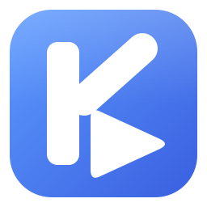
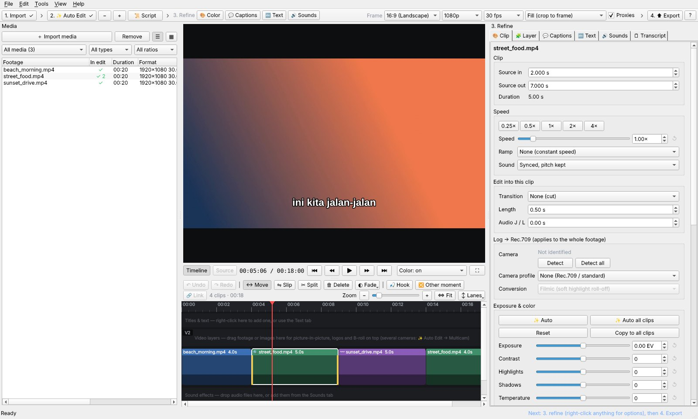

KangEditKangEdit analyses your footage, picks the best moments and builds a short-form or long-form edit. Then you fine-tune the cut, colour, captions and sound, and export. Free and open source, for Windows, macOS and Linux.

The viewer, the timeline and the Refine panel, with captions from the footage's speech.
The editing a vlog, a trip or a talking video needs, done for you, and every part of it yours to change.
Picks the sharpest, liveliest moments of all your footage (faces, movement, people laughing or cheering) and lays them out for Reels / Shorts / TikTok or a long YouTube video, with transitions and J / L cuts.
Opens on the strongest moments of the whole video. Pick them from thumbnails, in the order you tick them, or let it choose.
Speech recognition on your computer with Whisper or Qwen3-ASR, cleaned of road and wind noise. Animated, styled captions that follow every trim, and voice-overs captioned too.
Finds the plays in a game recording: a kill, a multi-kill or a teamfight, a gacha reveal, in any game.
Auto colour per clip, camera log profiles and official LUTs, grading, and a look that matches across clips.
Dynamic zoom and pan (on a face too), and stabilisation for shaky handheld shots, in the preview as in the export.
Voice clean-up, music that ducks under speech, sound effects, even loudness, and fades.
The transcript of the whole edit: find a clip by its words, drag it to reorder, slip a clip to a sentence, edit from a script.
Several cameras synced by their sound, picture in picture, titles and video layers.
A thumbnail maker, YouTube chapters, a check before export, and exports up to 4K with your graphics card.
Four steps, top to bottom of the window.
Drop in your videos and photos. KangEdit analyses them in the background and can transcribe their speech.
Choose short-form or long-form and what to prioritise. The edit is built in seconds; ask for shorter, longer or other moments.
Trim, slip and reorder on the timeline; colour, captions, text and sound in the Refine panel. Everything can be undone.
9:16, 16:9, 1:1 and more, H.264, H.265 or ProRes, on the graphics card when it can.
Analysis, speech recognition and rendering all run offline. The internet is used only to download FFmpeg and a speech model the first time, and for the optional sound-effect search and music download.
| Windows | Windows 10 (1809) or 11, 64-bit |
|---|---|
| macOS | macOS 14 Sonoma or newer, Apple silicon (M1 or newer) |
| Linux | x86-64 with glibc 2.35 or newer (Ubuntu 22.04, Debian 12, Fedora 36 or newer) |
| CPU and memory | 4 cores and 8 GB; 8 cores and 16 GB or more for 4K or long edits |
| Graphics | Any: preview and export work on the CPU. A GPU with a video encoder (NVIDIA, AMD, Intel, Apple) makes exports faster; an NVIDIA card with CUDA makes captions faster |
| Disk | About 1.5 GB for the app, FFmpeg and the speech model, plus room for the cache and exports |
Download the archive for your system from Releases, extract it and start KangEdit. To run from source, see the README.